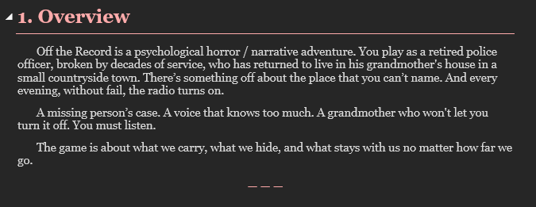

Off The Record
In design: story and systems En conception : histoire et systèmes

Off the Record is a psychological horror / narrative adventure. You play as a retired police officer, broken by decades of service, who has returned to live in his grandmother's house in a small countryside town. There's something off about the place that you can't name. And every evening, without fail, the radio turns on.
Off the Record est un jeu d'horreur psychologique et d'aventure narrative. Vous incarnez un policier à la retraite, brisé par des décennies de service, revenu vivre dans la maison de sa grand-mère dans un petit village de campagne. Il y a quelque chose d'étrange dans cet endroit, quelque chose que vous n'arrivez pas à nommer. Et chaque soir, sans faute, la radio s'allume.
A missing person's case. A voice that knows too much. A grandmother who won't let you turn it off. You must listen.
Une affaire de disparition. Une voix qui en sait trop. Une grand-mère qui refuse que vous l'éteigniez. Vous devez écouter.
The game is about what we carry, what we hide, and what stays with us no matter how far we go.
Le jeu parle de ce qu'on porte, de ce qu'on cache, et de ce qui reste avec nous, peu importe jusqu'où on va.
| Dates | May 2026 – presentmai 2026 – aujourd'hui |
|---|---|
| Type | Personal project, soloProjet personnel, en solo |
| Planned techTechnologies prévues | Unity (URP) · C# · Aseprite · Cinemachine |
Done so far
Réalisé jusqu'à maintenant
- Story bible: the world, main characters, the town and its decay over time, and the chapter structure
- The nightly radio broadcast that drives the investigation
- Art direction: 2D pixel art with selective 3D moments for key horror beats
- Bible narrative : l'univers, les personnages principaux, le village et sa dégradation au fil du temps, et la structure des chapitres
- L'émission de radio nocturne qui guide l'enquête
- Direction artistique : pixel art 2D avec des moments 3D ciblés pour les scènes d'horreur clés
Planned mechanics
Mécaniques prévues
- Day/night cycle
- Choice-based story with multiple endings
- A world that shifts as you uncover more
- Cycle jour/nuit
- Histoire à choix avec plusieurs fins
- Un monde qui change au fil de vos découvertes